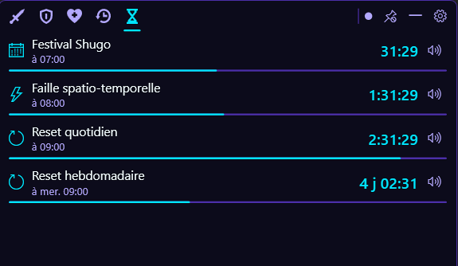
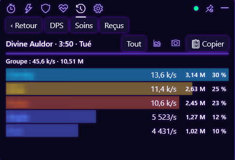
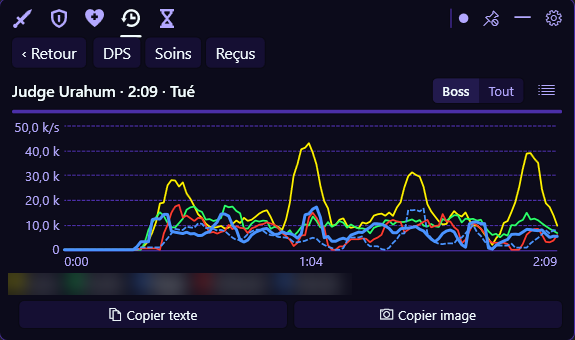
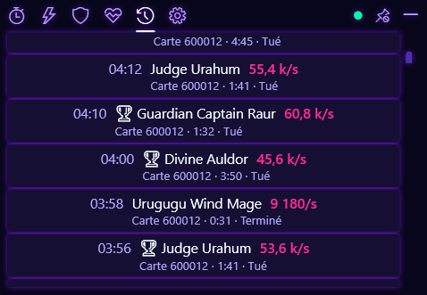

Guide
Tout ce que fait l'overlay, onglet par onglet.
Timers
Les temps d'apparition et de réinitialisation : failles, quotidiennes, hebdos, donjons, resets et boss de terrain. Des alertes visuelles et sonores te préviennent avant l'événement ; elles se règlent dans les Options.

Meters
Trois vues : DPS, Soins et Dégâts reçus. Un clic sur un joueur ouvre le détail par compétence et, s'il est tombé, le récap de sa mort.

Le bouton Boss seul / Tout bascule entre les seuls dégâts infligés au boss et l'ensemble des dégâts du combat.
Courbe de DPS
L'évolution du DPS au fil du combat. La légende est cliquable : clique sur un joueur pour afficher ou masquer sa courbe.

Copie dans le chat et en image
Copie un résumé du combat en texte, prêt à coller dans le chat du jeu, ou en image.
Historique
Les combats passés sont conservés, jusqu'à 100 combats sur 30 jours, et consultables à tout moment.

Records personnels
Tes meilleurs résultats sont conservés et signalés par un trophée dans l'historique.
Entraînement
Lance une session chronométrée de 1, 3 ou 5 minutes, ou libre, par exemple sur un mannequin. Tu peux ensuite comparer deux essais.
Thèmes
Deux thèmes, Classique et Néon. La lueur se désactive, l'opacité et l'échelle de l'overlay se règlent.
Raccourcis clavier
Des raccourcis globaux fonctionnent même quand le jeu a le focus. Ils se configurent dans les Options.
À propos et mises à jour
Au démarrage, l'app vérifie si une nouvelle version est disponible ; la section À propos des Options affiche la version installée et le résultat. Cette vérification est la seule connexion de l'app vers Internet (GitHub) ; tu peux la désactiver dans Options › À propos.